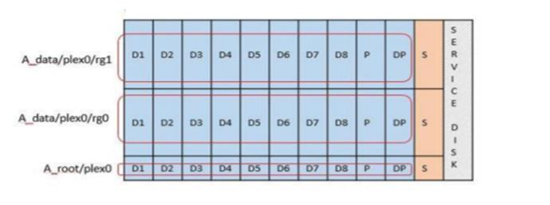

릴리즈 노트
릴리즈 노트
로컬 연결 스토리지를 위한 소프트웨어 RAID 서비스입니다
 변경 제안
변경 제안
소프트웨어 RAID는 ONTAP 소프트웨어 스택 내에 구현된 RAID 추상화 계층입니다. FAS와 같은 기존 ONTAP 플랫폼 내에서 RAID 계층과 동일한 기능을 제공합니다. RAID 계층은 드라이브 패리티 계산을 수행하고 ONTAP Select 노드 내의 개별 드라이브 장애에 대한 보호를 제공합니다.
하드웨어 RAID 구성과 상관없이 ONTAP Select는 소프트웨어 RAID 옵션도 제공합니다. ONTAP Select를 소형 폼 팩터 상용 하드웨어에 배포하는 경우와 같이 특정 환경에서 하드웨어 RAID 컨트롤러를 사용하지 않거나 사용하지 않는 것이 좋습니다. 소프트웨어 RAID는 이러한 환경을 포함하도록 사용 가능한 배포 옵션을 확장합니다. 사용자 환경에서 소프트웨어 RAID를 활성화하려면 다음 사항을 기억해야 합니다.
-
이 제품은 Premium 또는 Premium XL 라이센스와 함께 사용할 수 있습니다.
-
ONTAP 루트 및 데이터 디스크용 SSD 또는 NVMe(Premium XL 라이센스 필요) 드라이브만 지원합니다.
-
ONTAP Select VM 부팅 파티션에는 별도의 시스템 디스크가 필요합니다.
-
SSD 또는 NVMe 드라이브 중 하나의 개별 디스크를 선택하여 시스템 디스크(NVRAM, 부팅/CF 카드, 코어 덤프 및 다중 노드 설정의 중재자)용 데이터 저장소를 생성합니다.
-
-
참고 *
-
서비스 디스크 및 시스템 디스크라는 용어는 서로 바꿔서 사용할 수 있습니다.
-
서비스 디스크는 ONTAP Select VM 내에서 클러스터링, 부팅 등과 같은 다양한 항목을 제공하는 데 사용되는 VMDK입니다.
-
서비스 디스크는 호스트에서 보는 것처럼 물리적으로 단일 물리 디스크(통칭하여 서비스/시스템 물리 디스크라고 함)에 위치합니다. 해당 물리적 디스크에는 DAS 데이터 저장소가 포함되어야 합니다. ONTAP Deploy는 클러스터 구축 중에 ONTAP Select VM용 서비스 디스크를 생성합니다.
-
-
여러 데이터 저장소 또는 여러 물리적 드라이브에서 ONTAP Select 시스템 디스크를 더 이상 분리할 수 없습니다.
-
하드웨어 RAID는 더 이상 사용되지 않습니다.
로컬 연결 스토리지를 위한 소프트웨어 RAID 구성
소프트웨어 RAID를 사용하는 경우 하드웨어 RAID 컨트롤러가 없는 것이 좋지만 시스템에 기존 RAID 컨트롤러가 있는 경우 다음 요구 사항을 준수해야 합니다.
-
시스템에 디스크를 직접 제공할 수 있도록 하드웨어 RAID 컨트롤러를 비활성화해야 합니다(JBOD). 이러한 변경은 일반적으로 RAID 컨트롤러 BIOS에서 수행할 수 있습니다
-
또는 하드웨어 RAID 컨트롤러가 SAS HBA 모드에 있어야 합니다. 예를 들어, 일부 BIOS 구성에서는 RAID 외에 “AHCI” 모드가 허용되며, 이는 JBOD 모드를 활성화하도록 선택할 수 있습니다. 이렇게 하면 물리적 드라이브가 호스트에 있는 것처럼 표시되도록 패스스루를 사용할 수 있습니다.
컨트롤러에서 지원되는 최대 드라이브 수에 따라 추가 컨트롤러가 필요할 수 있습니다. SAS HBA 모드를 사용하는 경우 최소 6Gb/s 속도로 IO 컨트롤러(SAS HBA)가 지원되는지 확인합니다. 그러나 NetApp에서는 12GBps 속도를 권장합니다.
다른 하드웨어 RAID 컨트롤러 모드 또는 구성은 지원되지 않습니다. 예를 들어, 일부 컨트롤러는 디스크를 인위적으로 통과시킬 수 있지만 그 의미는 바람직하지 않을 수 있는 RAID 0 지원을 허용합니다. 지원되는 물리적 디스크 크기(SSD만 해당)는 200GB~16TB 사이입니다.

|
관리자는 ONTAP Select VM에서 사용 중인 드라이브를 추적하고 호스트에서 해당 드라이브를 실수로 사용하지 않도록 해야 합니다. |
ONTAP Select 가상 및 물리 디스크
하드웨어 RAID 컨트롤러 구성의 경우 RAID 컨트롤러에서 물리 디스크 이중화를 제공합니다. ONTAP Select에는 ONTAP 관리자가 데이터 애그리게이트를 구성할 수 있는 하나 이상의 VMDK가 제공됩니다. 이러한 VMDK는 RAID 0 형식으로 스트라이핑됩니다. ONTAP 소프트웨어 RAID는 하드웨어 수준에서 제공되는 복원력으로 인해 중복되고 비효율적이며 효과가 없기 때문입니다. 또한 시스템 디스크에 사용되는 VMDK는 사용자 데이터를 저장하는 데 사용되는 VMDK와 동일한 데이터 저장소에 있습니다.
소프트웨어 RAID를 사용할 때 ONTAP 배포는 ONTAP Select SSD 및 패스쓰루 또는 DirectPath IO 장치의에 VMDK(가상 디스크) 및 물리 디스크 RDM(Raw Device Mappings)을 제공합니다.
다음 그림에서는 이 관계를 보다 자세히 보여 주고, ONTAP Select VM 내부 작업에 사용되는 가상 디스크와 사용자 데이터를 저장하는 데 사용되는 물리적 디스크 간의 차이점을 보여 줍니다.
ONTAP Select 소프트웨어 RAID: 가상화 디스크 및 RDM * 사용

시스템 디스크(VMDK)는 동일한 데이터 저장소와 동일한 물리적 디스크에 상주합니다. 가상 NVRAM 디스크에는 빠르고 내구성이 있는 미디어가 필요합니다. 따라서 NVMe 및 SSD 유형 데이터 저장소만 지원됩니다.

시스템 디스크(VMDK)는 동일한 데이터 저장소와 동일한 물리적 디스크에 상주합니다. 가상 NVRAM 디스크에는 빠르고 내구성이 있는 미디어가 필요합니다. 따라서 NVMe 및 SSD 유형 데이터 저장소만 지원됩니다. NVMe 드라이브를 데이터에 사용할 때 성능 상의 이유로 시스템 디스크도 NVMe 장치여야 합니다. All NVMe 구성에서 시스템 디스크를 사용할 수 있는 적합한 후보는 Intel Optane 카드입니다.
|
|
현재 릴리즈에서는 여러 데이터 저장소 또는 여러 물리적 드라이브에서 ONTAP Select 시스템 디스크를 더 이상 분리할 수 없습니다. |
각 데이터 디스크는 작은 루트 파티션(스트라이프)과 같은 크기의 파티션 두 개로 나뉘어 ONTAP Select VM 내에서 보이는 두 개의 데이터 디스크를 만듭니다. 파티션은 단일 노드 클러스터 및 HA 쌍의 노드에 대해 다음 그림에 표시된 대로 루트 데이터 데이터(RD2) 스키마를 사용합니다.
P 패리티 드라이브를 나타냅니다. DP 는 이중 패리티 드라이브와 를 나타냅니다 S 스페어 드라이브를 나타냅니다.
-
단일 노드 클러스터를 위한 RDD 디스크 파티셔닝 *

-
다중 노드 클러스터를 위한 RDD 디스크 파티셔닝(HA 쌍) *

ONTAP 소프트웨어 RAID는 RAID 4, RAID-DP 및 RAID-TEC와 같은 RAID 유형을 지원합니다. 이는 FAS 및 AFF 플랫폼에서 사용되는 RAID 구문과 동일합니다. 루트 프로비저닝의 경우 ONTAP Select는 RAID 4 및 RAID-DP만 지원합니다. 데이터 애그리게이트에 RAID-TEC를 사용할 때는 전반적인 보호 기능이 RAID-DP입니다. ONTAP Select HA는 각 노드의 구성을 다른 노드로 복제하는 무공유 아키텍처를 사용합니다. 즉, 각 노드는 루트 파티션과 해당 피어의 루트 파티션 복제본을 저장해야 합니다. 데이터 디스크에는 단일 루트 파티션이 있으므로 최소 데이터 디스크 수는 ONTAP Select 노드가 HA 쌍의 일부인지 여부에 따라 달라집니다.
단일 노드 클러스터의 경우 모든 데이터 파티션이 로컬(활성) 데이터를 저장하는 데 사용됩니다. HA 쌍의 일부인 노드의 경우 데이터 파티션 하나는 해당 노드의 로컬(활성) 데이터를 저장하는 데 사용되고, 두 번째 데이터 파티션은 HA 피어의 활성 데이터를 미러링하는 데 사용됩니다.
통과 연결(DirectPath IO) 디바이스와 RDM(Raw Device Maps)
VMware ESX는 현재 NVMe 디스크를 원시 장치 맵으로 지원하지 않습니다. ONTAP Select에서 NVMe 디스크를 직접 제어하려면 NVMe 드라이브를 ESX에서 통과 장치로 구성해야 합니다. NVMe 장치를 통과 장치로 구성하려면 서버 BIOS에서 지원해야 하며 중단 프로세스이므로 ESX 호스트를 재부팅해야 합니다. 또한 ESX 호스트당 최대 통과 장치 수는 16개입니다. 그러나 ONTAP 배포에서는 이 제한이 14로 제한됩니다. ONTAP Select 노드당 14개의 NVMe 장치로 이 제한이 있다는 것은 모든 NVMe 구성이 총 용량을 희생하여 매우 높은 IOP 밀도(IOPS/TB)를 제공한다는 의미입니다. 또는 더 큰 스토리지 용량을 제공하는 고성능 구성을 원할 경우 대규모 ONTAP Select VM 크기, 시스템 디스크용 Intel Optane 카드, 데이터 스토리지용 SSD 드라이브 수를 지정하는 것이 좋습니다.
|
|
NVMe 성능을 최대한 활용하려면 대규모 ONTAP Select VM 크기를 고려하십시오. |
패스스루 장치와 RDM 간에는 추가적인 차이점이 있습니다. RDM은 실행 중인 VM에 매핑할 수 있습니다. 패스스루 디바이스에는 VM 재부팅이 필요합니다. 즉, NVMe 드라이브 교체 또는 용량 확장(드라이브 추가) 절차를 수행하려면 ONTAP Select VM을 재부팅해야 합니다. 드라이브 교체 및 용량 확장(드라이브 추가) 작업은 ONTAP Deploy의 워크플로우에 따라 달라집니다. ONTAP Deploy는 단일 노드 클러스터의 ONTAP Select 재부팅과 HA 쌍의 페일오버/페일백을 관리합니다. 하지만 SSD 데이터 드라이브 작업(ONTAP Select 재부팅/장애 조치는 필요 없음)과 NVMe 데이터 드라이브 작업(ONTAP Select 재부팅/장애 조치 필요) 간의 차이점을 반드시 알아야 합니다.
물리 및 가상 디스크 프로비저닝
보다 간소화된 사용자 환경을 제공하기 위해 ONTAP Deploy는 지정된 데이터 저장소(물리적 시스템 디스크)에서 시스템(가상) 디스크를 자동으로 프로비저닝하고 ONTAP Select VM에 연결합니다. 이 작업은 ONTAP Select VM이 부팅될 수 있도록 초기 설정 중에 자동으로 수행됩니다. RDM은 파티셔닝되고 루트 애그리게이트는 자동으로 구축됩니다. ONTAP Select 노드가 HA 쌍의 일부인 경우 데이터 파티션이 로컬 스토리지 풀 및 미러 스토리지 풀에 자동으로 할당됩니다. 이 할당은 클러스터 생성 작업과 스토리지 추가 작업 모두에서 자동으로 수행됩니다.
ONTAP Select VM의 데이터 디스크는 기본 물리적 디스크와 연결되기 때문에 더 많은 수의 물리적 디스크를 사용하여 구성을 생성할 때 성능에 영향을 미칩니다.
|
|
루트 애그리게이트의 RAID 그룹 유형은 사용 가능한 디스크 수에 따라 다릅니다. ONTAP 배포는 적절한 RAID 그룹 유형을 선택합니다. 노드에 할당된 디스크가 충분한 경우 RAID-DP를 사용하고, 그렇지 않은 경우 RAID-4 루트 애그리게이트를 생성합니다. |
소프트웨어 RAID를 사용하여 ONTAP Select VM에 용량을 추가할 때 관리자는 물리적 드라이브 크기와 필요한 드라이브 수를 고려해야 합니다. 자세한 내용은 섹션을 참조하십시오 "스토리지 용량 증가".
FAS 및 AFF 시스템과 마찬가지로 용량이 동일하거나 더 큰 드라이브만 기존 RAID 그룹에 추가할 수 있습니다. 대용량 드라이브의 크기가 큽니다. 새 RAID 그룹을 생성하는 경우 새 RAID 그룹 크기가 기존 RAID 그룹 크기와 일치하여 전체적인 애그리게이트 성능이 저하되지 않도록 해야 합니다.
ONTAP Select 디스크를 해당 ESX 디스크와 일치시킵니다
ONTAP Select 디스크에는 보통 net x.x.y라는 레이블이 지정됩니다 다음 ONTAP 명령을 사용하여 디스크 UUID를 얻을 수 있습니다.
<system name>::> disk show NET-1.1 Disk: NET-1.1 Model: Micron_5100_MTFD Serial Number: 1723175C0B5E UID: *500A0751:175C0B5E*:00000000:00000000:00000000:00000000:00000000:00000000:00000000:00000000 BPS: 512 Physical Size: 894.3GB Position: shared Checksum Compatibility: advanced_zoned Aggregate: - Plex: -This UID can be matched with the device UID displayed in the ‘storage devices’ tab for the ESX host

ESXi 셸에서 다음 명령을 입력하여 지정된 물리적 디스크(na.unique-id로 식별)의 LED를 깜박일 수 있습니다.
esxcli storage core device set -d <naa_id> -l=locator -L=<seconds>
소프트웨어 RAID를 사용할 때 다중 드라이브 오류가 발생합니다
여러 드라이브가 동시에 오류 상태에 있는 경우, 시스템이 여러 개의 상황을 경험할 수 있습니다. 시스템의 동작은 애그리게이트 RAID 보호 및 장애 발생 드라이브 수에 따라 다릅니다.
RAID4 애그리게이트는 한 번의 디스크 장애를 견딜 수 있고, RAID-DP 애그리게이트는 2번의 디스크 장애를 견딜 수 있으며, RAID-TEC 애그리게이트는 3번의 디스크 장애를 견딜 수 있습니다.
장애가 발생한 디스크 수가 RAID 유형이 지원하는 최대 장애 수보다 적고, 스페어 디스크를 사용할 수 있는 경우 재구성 프로세스가 자동으로 시작됩니다. 스페어 디스크를 사용할 수 없는 경우 aggregate는 스페어 디스크를 추가할 때까지 저하된 상태로 데이터를 제공합니다.
장애가 발생한 디스크 수가 RAID 유형이 지원하는 최대 장애 수보다 많은 경우 로컬 플렉스를 장애 발생 으로 표시하고 애그리게이트 상태는 성능 저하 로 표시됩니다. 데이터는 HA 파트너에 있는 두 번째 플렉스에서 제공됩니다. 즉, 노드 1에 대한 모든 I/O 요청은 클러스터 인터커넥트 포트 e0e(iSCSI)를 통해 노드 2에 물리적으로 위치한 디스크로 전송됩니다. 두 번째 플렉스도 실패하면 애그리게이트는 실패로 표시되고 데이터를 사용할 수 없게 됩니다.
오류가 발생한 플렉스를 삭제하고 다시 생성해야 적절한 데이터 미러링을 재개할 수 있습니다. 다중 디스크 장애로 인해 데이터 애그리게이트의 성능이 저하되어 루트 애그리게이트의 성능이 저하됩니다. ONTAP Select는 RDD(루트 데이터 데이터) 파티셔닝 스키마를 사용하여 각 물리적 드라이브를 루트 파티션과 두 개의 데이터 파티션으로 분할합니다. 따라서 하나 이상의 디스크를 분실하면 로컬 루트 또는 원격 루트 애그리게이트의 복사본과 로컬 데이터 애그리게이트 및 원격 데이터 애그리게이트의 복사본을 비롯하여 여러 애그리게이트가 영향을 미칠 수 있습니다.
C3111E67::> storage aggregate plex delete -aggregate aggr1 -plex plex1
Warning: Deleting plex "plex1" of mirrored aggregate "aggr1" in a non-shared HA configuration will disable its synchronous mirror protection and disable
negotiated takeover of node "sti-rx2540-335a" when aggregate "aggr1" is online.
Do you want to continue? {y|n}: y
[Job 78] Job succeeded: DONE
C3111E67::> storage aggregate mirror -aggregate aggr1
Info: Disks would be added to aggregate "aggr1" on node "sti-rx2540-335a" in the following manner:
Second Plex
RAID Group rg0, 5 disks (advanced_zoned checksum, raid_dp)
Usable Physical
Position Disk Type Size Size
---------- ------------------------- ---------- -------- --------
shared NET-3.2 SSD - -
shared NET-3.3 SSD - -
shared NET-3.4 SSD 208.4GB 208.4GB
shared NET-3.5 SSD 208.4GB 208.4GB
shared NET-3.12 SSD 208.4GB 208.4GB
Aggregate capacity available for volume use would be 526.1GB.
625.2GB would be used from capacity license.
Do you want to continue? {y|n}: y
C3111E67::> storage aggregate show-status -aggregate aggr1
Owner Node: sti-rx2540-335a
Aggregate: aggr1 (online, raid_dp, mirrored) (advanced_zoned checksums)
Plex: /aggr1/plex0 (online, normal, active, pool0)
RAID Group /aggr1/plex0/rg0 (normal, advanced_zoned checksums)
Usable Physical
Position Disk Pool Type RPM Size Size Status
-------- --------------------------- ---- ----- ------ -------- -------- ----------
shared NET-1.1 0 SSD - 205.1GB 447.1GB (normal)
shared NET-1.2 0 SSD - 205.1GB 447.1GB (normal)
shared NET-1.3 0 SSD - 205.1GB 447.1GB (normal)
shared NET-1.10 0 SSD - 205.1GB 447.1GB (normal)
shared NET-1.11 0 SSD - 205.1GB 447.1GB (normal)
Plex: /aggr1/plex3 (online, normal, active, pool1)
RAID Group /aggr1/plex3/rg0 (normal, advanced_zoned checksums)
Usable Physical
Position Disk Pool Type RPM Size Size Status
-------- --------------------------- ---- ----- ------ -------- -------- ----------
shared NET-3.2 1 SSD - 205.1GB 447.1GB (normal)
shared NET-3.3 1 SSD - 205.1GB 447.1GB (normal)
shared NET-3.4 1 SSD - 205.1GB 447.1GB (normal)
shared NET-3.5 1 SSD - 205.1GB 447.1GB (normal)
shared NET-3.12 1 SSD - 205.1GB 447.1GB (normal)
10 entries were displayed..
|
|
하나 또는 여러 개의 드라이브 오류를 테스트하거나 시뮬레이션하려면 를 사용합니다 storage disk fail -disk NET-x.y -immediate 명령. 시스템에 스페어가 있는 경우 aggregate가 재구성되기 시작합니다. 명령을 사용하여 재구성 상태를 확인할 수 있습니다 storage aggregate show. ONTAP Deploy를 사용하여 시뮬레이션된 오류 드라이브를 제거할 수 있습니다. ONTAP에서 드라이브를 로 표시했습니다 Broken. 드라이브는 실제로 파손되지 않으며 ONTAP 배포를 사용하여 다시 추가할 수 있습니다. 손상된 레이블을 지우려면 ONTAP Select CLI에서 다음 명령을 입력합니다.
|
set advanced disk unfail -disk NET-x.y -spare true disk show -broken
마지막 명령의 출력은 비어 있어야 합니다.
NVRAM을 가상화했습니다
NetApp FAS 시스템은 일반적으로 물리적 NVRAM PCI 카드를 사용합니다. 이 카드는 비휘발성 플래시 메모리가 포함된 고성능 카드로 쓰기 성능이 크게 향상됩니다. 이 작업은 ONTAP가 들어오는 쓰기를 클라이언트에 즉시 확인할 수 있도록 허용하여 수행합니다. 또한 디스테이징이라고 하는 프로세스에서 수정된 데이터 블록을 느린 스토리지 미디어로 다시 이동하도록 예약할 수도 있습니다.
일반 시스템에는 일반적으로 이러한 유형의 장비가 장착되지 않습니다. 따라서 NVRAM 카드의 기능이 가상화되어 ONTAP Select 시스템 부팅 디스크의 파티션에 배치됩니다. 따라서 인스턴스의 시스템 가상 디스크를 배치하는 것이 매우 중요합니다.